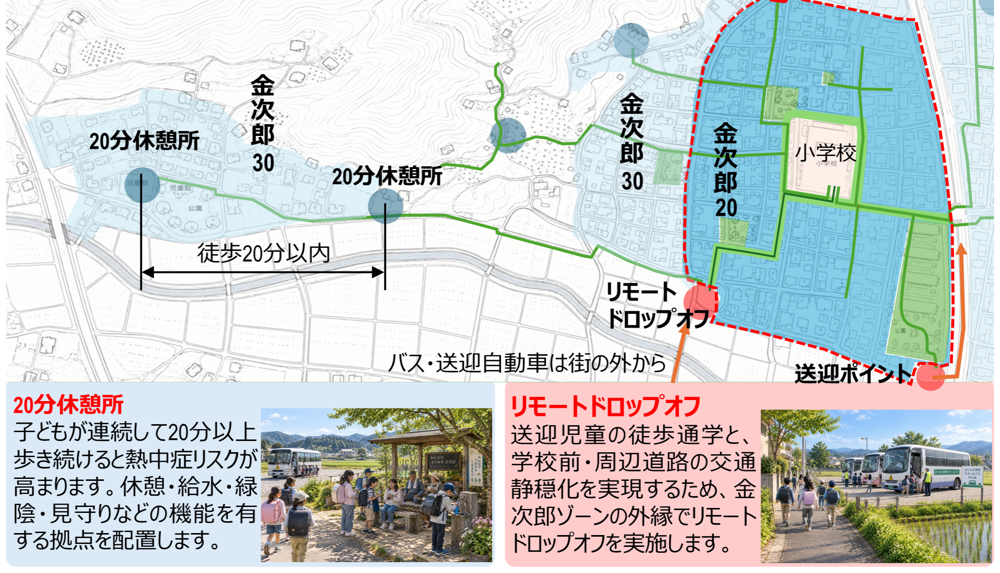

仏パリ・英ロンドンと日本の通学路対策の比較からスクールゾーンを再考する
段階的ゾーン設定と空間デザインの工夫による新しい通学路像
日本の通学路の現状から
日本では、1960年代の交通戦争を背景に、1970年にスクールゾーンの取り組みが始まりました。小学校を中心に半径500ｍ程度の通学路が対象となり、警戒標識、横断歩道やミラーなどの安全施設が設置され、速度規制や通学時間帯の歩行者用道路などの交通規制が実施されてきました。近年の通学路は、学校の統廃合による移動の長距離化や、暑熱環境下での熱中症リスクなどの新たな課題に直面しています。対策としてスクールバスの導入も増えつつありますが、自家用車による送迎も増加することが考えられます。通学の安全を見守る地域人材（例えば、横断時の旗振り）の減少も新たな課題です。子どもが歩き、集まり、待ち、休み、地域と関わる「日常生活の場」として通学路を捉える視点で、今後の通学路施策のあり方を検討します。
先進事例の知見を日本の通学路へ
ロンドンとパリの両市では、都市の明確なビジョンと市長の力強いリーダーシップのもと、総合的な交通施策が展開されています。ロンドンでは、学校への自動車送迎対策として、学校前道路に厳格な交通規制をかける「School Streets」が、パリでは交通静穏化と都市緑化を進める政策目標を背景として、学校前道路を市民の広場に転換する「Rues aux écoles」が、中心的な施策となっています。両市の取り組みは共通して、「通学路」のみの対策に留まらず、自動車利用の抑制、自転車や公共交通利用の促進、人を中心とした空間整備を組合せた、総合的かつ面的な施策となっています。この考え方をベースに、長距離通学や都市の暑熱、送迎などの課題を乗り越える、日本の新しい通学路像として、「金次郎ゾーン」を提案します。
パリ・ロンドンから学ぶ「金次郎ゾーン」実現の要点
段階的に子どもを自動車の脅威から守る 小学校を中心として「道路を子どもの居場所へと変える」ために、道路交通の基本構造を刷新します。外縁を生活道路の法定速度30km/h化でカバーしつつ、その内側に子どもを優先する20km/h規制をかけ、さらに学校を囲むように歩行者用道路に指定することで、段階的に車速を低減させます。エリアに用事が無い通過交通を排除し、地区/都市単位で自動車交通量を減らしていきます。
学校前空間の高質化 学校前道路を、車が通るための空間から、子どもが歩き、集まり、待ち、休み、地域との接点となるような、広場空間に転換します。開放された空間や緑の存在は、豊かな五感体験を提供します。学校内でなく地域に開かれた場とすることで、周辺の住民との交流や、地域の清掃・緑化へと活動を広げることもできます。沿道必需の自動車利用や緊急車両への対応は、簡易ゲートの設置と除外規定で解決します。
歩行者用道路の徹底 完全な歩行者専用化が難しい道路では、時間帯や許可に応じて昇降する可動式ポール（ソフトライジングボラード）を設け、一般車両の通り抜けを抑制します。地域の合意形成を図るうえでは、規制時間を学校の登下校としっかりあわせる、可変標識により長期休みは規制がかからないようにする、などの細やかな工夫が有効と考えられます。
導入プロセス 社会実験から恒久整備に至るプロセスを明確に示し、対話を円滑に進めつつ、より良い空間デザインを導きます。交通規制（歩行者用道路など）の導入も含め、合意形成のプロセスデザインが必要です。
都市教育 ロンドンのTfLの取り組みは、交通安全だけでなく、徒歩や自転車・公共交通利用の意義を伝え、実践を促します。日本でも、環境・自然・地域との繋がりなど、独自の新しい交通教育のあり方が考えられます。
![「学校を中心として、段階的な交通静穏化を目指します」と題した金次郎ゾーンの概念図。小学校を中心に、校門前を歩行者専用化する「金次郎ゼロ Kinjiro0」（学校前で子どもが集い、並んで歩ける人中心の緑化・広場化された空間。交通は遮断され、未就学児や低学年児童が路面のペイントで遊んでいます）、その外側の「金次郎20 Kinjiro20」（歩車共存を基本としつつ、子どもが優先される道路空間。登下校時、子どもたちが集まるにつれ、段階的に自動車交通が減っていきます。子どもが、自動車運転手とのコミュニケーションを通じて、自立的に横断する力を身につけます）、外縁の「金次郎30 Kinjiro30」（これまでのゾーン30の取り組みに加えて、法定速度の30km/h化により、通学路となる生活道路の交通静穏化を強化します）を地図上に示す。横断安全、通学路に公園・緑地を積極的に使う、の注記あり。下段の写真：広場化による金次郎ゼロ（パリのように、通過交通を排除した歩行者中心の広場化を目指します。子どもたちが緑に触れる体験や、清掃活動を通じた地域との繋がりが期待されます）、規制による金次郎ゼロ（ロンドンの時間帯規制を参考に、ソフトライジングボラードを活用することで、人の手を煩わせることなく、対象時間帯の車両通行を確実に防ぐことができます）](images/figure1.png)
日本の課題と取り組みから示唆される「金次郎ゾーン」実現の要点
リモートドロップオフの事例から リモートドロップオフにより、子どもの健康増進、覚醒による集中を促し、徒歩通学中の体験を豊かにします。学校から少し離れた場所に乗降・待機拠点を設けることで、学校前への車両の集中を避ける効果もあります。
20分休憩所 子どもが連続して20分以上歩き続けると熱中症リスクが高まります。徒歩が20分を超えないように、休憩・給水・緑陰・見守りの拠点を配置しましょう。集団登下校の集合場所とする、子ども110番の家と連携する、地域の人の目のある場所を休憩所にするなど、地域連携の機能との兼ね合わせも有効です。
横断安全の確保 子どもの交通事故は横断中に発生しやすく、飛び出しや右左折車との錯綜も大きなリスクとなります。施設の出入口での柵や横断支援デバイスの設置。この門を境界とする変化が大きすぎることから、校庭と道路をつなぐ緩衝空間。
